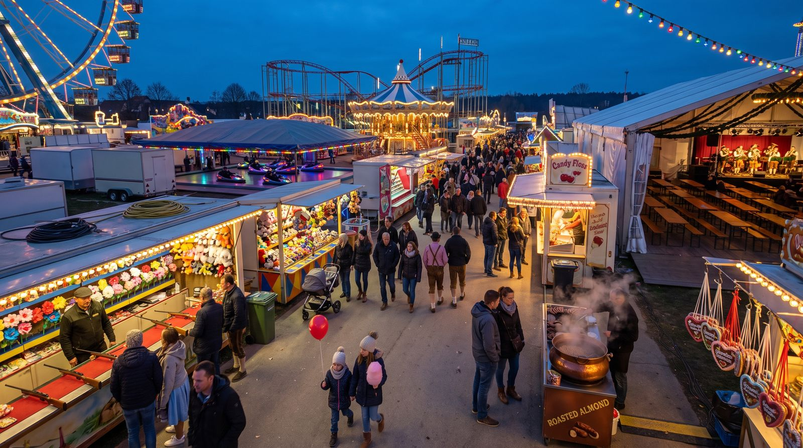

deutschoderwas · Sprachspielclub · 26. September 2026 · ab B1
Auf dem Volksfest
Heute gehen wir gemeinsam über den Festplatz: Riesenrad, Losbude, Festzelt und gebrannte Mandeln. Wir sammeln Wortschatz, üben Wechselpräpositionen, spielen Situationen durch — und am Ende wartet das große Quiz mit zehn Runden.
Beschreibe möglichst genau, was du siehst. Also nicht „da sind viele Leute“, sondern „vor dem Festzelt warten ungefähr zwanzig Menschen in einer Schlange, zwei von ihnen tragen Tracht“.

💡 Erste Runde: Jede Person sucht sich eine Ecke des Bildes aus und erzählt eine Minute lang, was dort passiert. Die anderen dürfen danach genau zwei Fragen dazu stellen. Wer nichts mehr findet, gibt weiter.
Findet diese Sachen
Tippt ein Wort an, wenn ihr es gefunden und die Lage beschrieben habt: So soll eine Lagebeschreibung klingen: „Rechts neben der Losbude steht ein junger Mann, der einen riesigen Plüschbären unter dem Arm trägt.“
0 von 28 gefunden
Die Wörter dazu
Sagt jedes Wort laut — und gleich den ganzen Beispielsatz dazu. Der Artikel gehört immer mit dazu.
💡 Spiel dazu: Verdeckt die Wörter. Eine Person beschreibt eine Karte in drei Sätzen, ohne das Wort zu nennen — die anderen raten. Tippt auf eine Karte, um sie einzeln aufzudecken.
🎁 „Ich sehe etwas, das …“
Eine Person zieht ein geheimes Wort aus dem Bild und beschreibt nur mit Präpositionen, wo es ist — die anderen raten, was es ist!
🤫 Dein geheimes Wort
Bereit?
Beschreibe seine Lage — aber sag das Wort nicht!
🗣️ So beschreibst du: „Es befindet sich …“ · „Es liegt / steht / hängt …“ + Präposition + Dativ.
🏆 Spielregeln: Nenne mindestens zwei Präpositionen, bevor die anderen raten dürfen. Wer richtig rät, bekommt einen Punkt und ist als Nächstes dran.
📍 Neun Präpositionen, zwei Fragen. Wo? fragt nach der Lage — dann kommt der Dativ. Wohin? fragt nach der Richtung — dann kommt der Akkusativ. Dieselbe Präposition, zwei Fälle.
Wo? → Dativ
Die Sache ist schon da und bewegt sich nicht. Bildet zu jeder Präposition einen eigenen Satz zum Bild.
in
„Im Festzelt spielt eine Blaskapelle, und niemand versteht sein eigenes Wort.“
an
„An der Losbude hängen die Gewinne an einer langen Schnur.“
auf
„Auf dem Festplatz riecht es nach gebrannten Mandeln und Bratwurst.“
unter
„Unter der Bierbank steht meine Tasche, damit sie niemand umstößt.“
über
„Über dem Riesenrad steht schon der halbe Mond.“
neben
„Neben dem Autoscooter verkauft eine Frau Zuckerwatte in drei Farben.“
vor
„Vor der Schießbude warten wir seit zehn Minuten.“
hinter
„Hinter dem Festzelt parken die Wohnwagen der Schausteller.“
zwischen
„Zwischen den Buden ist es eng, laut und sehr hell.“
🧠 Dativ-Artikel: der → dem · das → dem · die → der · Plural → den (+n).
Wohin? → Akkusativ
Etwas bewegt sich irgendwohin. Achtet auf das Verb: gehen, legen, stellen, werfen — das sind die Verräter.
in + Akk.
„Komm, wir gehen ins Festzelt und suchen zwei freie Plätze.“
auf + Akk.
„Setz dich auf die Bierbank, ich hole uns zwei Maß.“
an + Akk.
„Stell dich bitte an die Kasse, ich halte solange die Jacken.“
unter + Akk.
„Ich schiebe den Rucksack unter den Tisch, damit keiner darüber stolpert.“
über + Akk.
„Der rote Luftballon steigt langsam über das Riesenrad.“
hinter + Akk.
„Der Schausteller stellt die leeren Kisten hinter die Bude.“
🧠 Akkusativ-Artikel: der → den · das → das · die → die · Plural → die. Merksatz: Wo? = Dativ (es ist schon da) · Wohin? = Akkusativ (es bewegt sich dorthin).
🎲 Spiel dazu: Eine Person sagt einen Satz mit Wo?, die nächste macht daraus einen Satz mit Wohin?. Wer den Fall verwechselt, gibt weiter.
🔤 Tabu
Erkläre das Wort oben — aber ohne die verbotenen Wörter zu benutzen! Die anderen raten. Tipp: Fang mit „Das ist ein Ort, an dem …“ oder „Das braucht man, wenn …“ an.
⏱️ Spielidee: 60 Sekunden pro Runde. Für jedes erratene Wort gibt es einen Punkt. Benutzt jemand ein verbotenes Wort, ist die Karte futsch. Zwei Teams treten gegeneinander an!
🗣️ Frei sprechen
Sprecht frei — nutzt den Wortschatz aus dem Bild.
Erinnerung
Wann warst du zum letzten Mal auf einem Volksfest oder einem ähnlichen Fest? Woran erinnerst du dich am stärksten — an ein Geräusch, einen Geruch oder ein Bild?
Beschreiben
Beschreibe ein Fahrgeschäft so genau, dass die anderen es erraten, ohne dass du seinen Namen nennst. Sag, wie es aussieht, wie es sich bewegt und wie man sich darin fühlt.
Vergleich
Was ist der größte Unterschied zwischen einem Volksfest und einem Konzert oder einem Museumsbesuch? Wo fühlst du dich wohler und warum?
Regeln
Welche ungeschriebenen Regeln gelten auf einem Volksfest — beim Anstellen, beim Sitzen an einem fremden Tisch, beim Bezahlen einer Runde?
Kultur
Gibt es in deinem Land ein Fest, das dem deutschen Volksfest ähnelt? Was ist dort gleich, was wäre für deutsche Gäste überraschend?
Geschichte
Erzähle in fünf Sätzen eine kleine Geschichte: Jemand gewinnt an der Losbude etwas, das er überhaupt nicht haben will. Was passiert bis zum Abend damit?
Diskussion
Für wen sind Volksfeste heute eigentlich gemacht — für Kinder, für Familien oder für junge Erwachsene? Wer kommt dabei zu kurz?
Streit
Ein Bekannter sagt: „Volksfeste sind laut, teuer und ungesund, das ist reine Geldmacherei.“ Wie antwortest du ihm, ohne einfach nur zu widersprechen?
🔑 Redemittel fürs Bild: „Ganz vorne / hinten sieht man …“ · „Direkt daneben …“ · „Mitten im Bild / in der Ecke …“ · „Links / rechts von … befindet sich …“ · „Im Vordergrund / im Hintergrund …“
⚖️ Kleine Debatte
Sollte auf Volksfesten deutlich weniger Alkohol ausgeschenkt werden?
🎡 Ja, klare Grenzen
Ein großer Teil der Unfälle und Schlägereien auf Festplätzen hat direkt mit zu viel Alkohol zu tun.
Familien mit Kindern gehen am Abend früher nach Hause, weil ihnen die Stimmung unangenehm wird.
Die Schausteller verdienen auch an alkoholfreien Getränken, wenn sie fair kalkulieren.
Wer weniger trinkt, erinnert sich am nächsten Tag wenigstens noch an das Fest.
🎈 Nein, ein Fest bleibt ein Fest
Ein Volksfest lebt von Ausgelassenheit; zu viele Vorschriften nehmen ihm genau diese Stimmung.
Erwachsene dürfen selbst entscheiden, wie viel sie trinken, und tragen die Folgen selbst.
Nicht das Getränk ist das Problem, sondern einzelne Gäste, die sich nicht benehmen können.
Strengere Regeln treffen alle, obwohl nur wenige über die Stränge schlagen.
So sagst du deine Meinung
Ich finde, …Für mich ist …Das mag sein, aber …Da bin ich anderer Meinung, weil …Genau das ist doch das Problem: …
🎲 So geht es: Zwei Gruppen. Jede bekommt eine Seite zugelost — auch die, die sie selbst nicht glaubt. Drei Minuten sammeln, dann abwechselnd sprechen, immer ein Satz.
🎬 Rollenspiele
Zieht eine Karte, verteilt die zwei Rollen und spielt die Szene zwei bis drei Minuten. Die Wörter unten dürfen — sollen! — vorkommen.
🗣️ Nach jeder Szene, ein Satz reihum: „Ich hätte an deiner Stelle gesagt: …“ — so hört ihr drei Varianten für dieselbe Situation statt nur einer.
🏆 Das große Quiz
Zehn Runden über den Festplatz: erst Wortschatz, dann Landeskunde, Grammatik, starke Verben und zum Schluss echte Redewendungen. Pro Frage gibt es genau eine richtige Antwort.
Runde 1 · Frage 10 von 6
🏅 Als Wettkampf: Zwei Teams, abwechselnd. Wer die richtige Antwort hat, muss zusätzlich einen eigenen Satz mit dem Wort bilden — erst dann gibt es den Punkt.